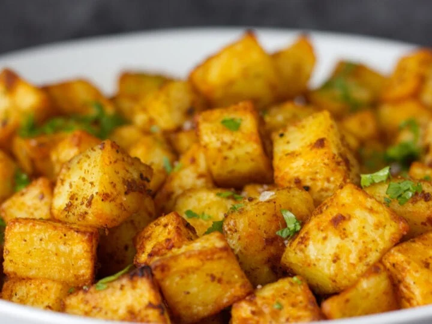

County Style Potatoes - Mex style

Description
These Mexican-style country potatoes are one of my favorite comfort foods when I want something crispy and full of flavor. They’re soft on the inside, but nice and crispy on the outside. I throw them together with onions, bell peppers, tomatoes, and serrano peppers for a little spice, and the seasoning mix gives them that perfect smoky kick. I like to finish it off with some fresh parsley and cilantro for extra freshness. Whether you’re having them for breakfast or as a side, these potatoes always hit the spot!
Blah blah blah
Ingredients
- 4 large russet potatoes, diced
- 2 tablespoons vegetable oil
- 1 small onion, finely chopped
- 1 bell pepper (red or green), diced
- 2 cloves garlic, minced
- 1 teaspoon italian seasoning
- parsley
- 1 teaspoon smoked paprika
- 1 teaspoon cumin
- 1/2 teaspoon chili powder
- 1/2 teaspoon garlic powder
- 1/2 teaspoon onion powder
- Salt and pepper to taste
- 3-4 tomatoes, depending on size
- 1-2 serranos
- 1/4 cup fresh cilantro, chopped (optional)
Steps
- Prep the potatoes: Dice the potatoes into bite-sized cubes. Bring a pot of salted water to a boil and cook the potatoes for 5-7 minutes until they're slightly tender but still firm. Drain and set aside.
- Sauté the veggies: In a large skillet, heat the vegetable oil over medium heat. Add the chopped onion and bell pepper, and sauté for about 4-5 minutes until they soften. Add the minced garlic and cook for another minute until fragrant.
- Add tomatoes and serranos: Toss in the diced tomatoes and finely chopped serrano peppers. Cook for 3-4 minutes until the tomatoes start to break down and the mixture becomes a bit saucy.
- Cook the potatoes: Add the parboiled potatoes to the skillet, spreading them out evenly. Let them cook undisturbed for about 4-5 minutes to get crispy on one side, then flip and continue cooking until golden brown and crispy all around.
- Season the potatoes: Once the potatoes are crispy, sprinkle the Italian seasoning, parsley, smoked paprika, cumin, chili powder, garlic powder, onion powder, salt, and pepper. Stir to coat the potatoes evenly, cooking for another 2-3 minutes to combine the flavors.
- Finish and serve: Turn off the heat and stir in the chopped fresh cilantro, if using. Serve hot and enjoy with a squeeze of lime if you'd like some extra zest!